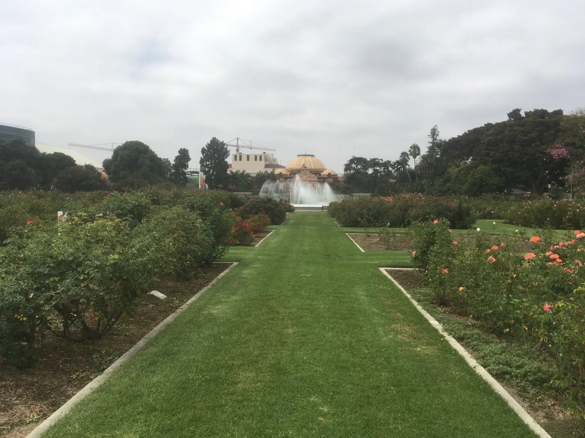
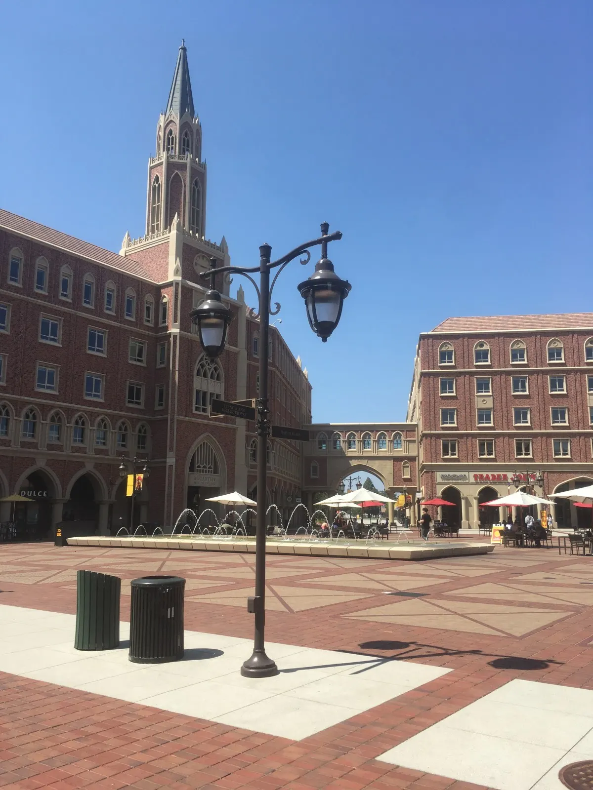
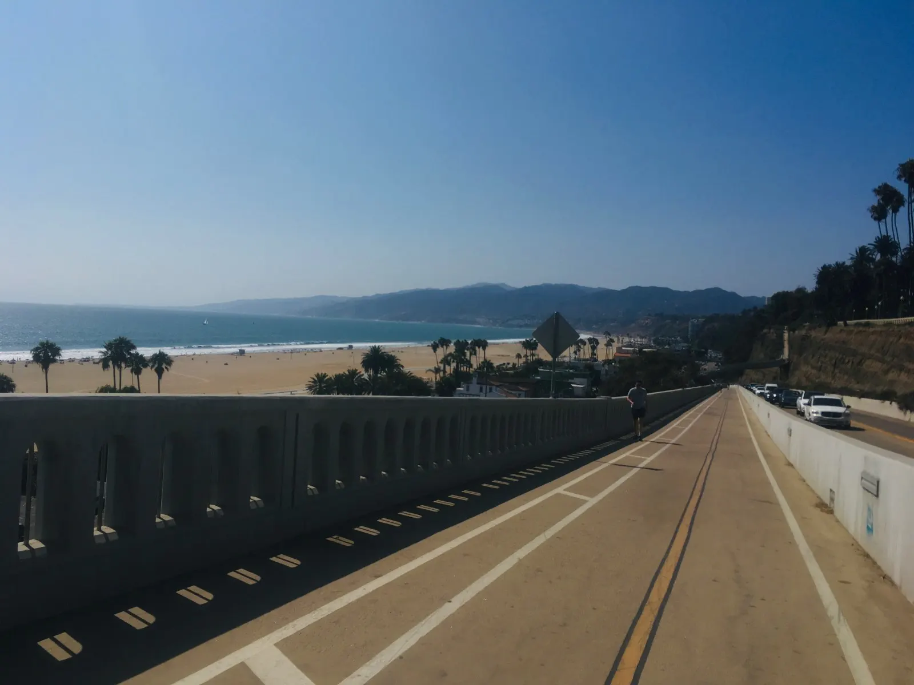
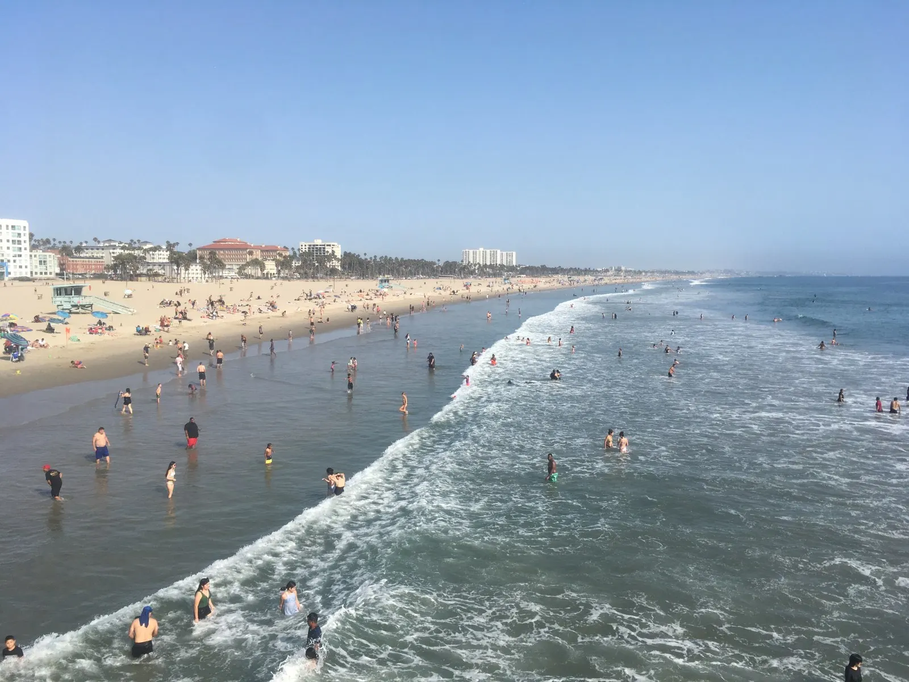
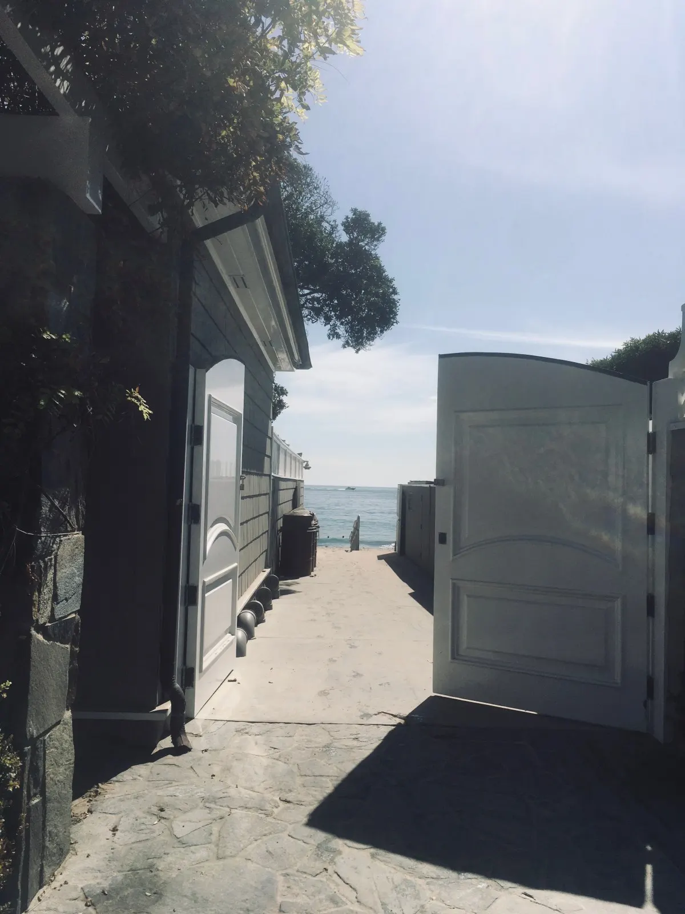
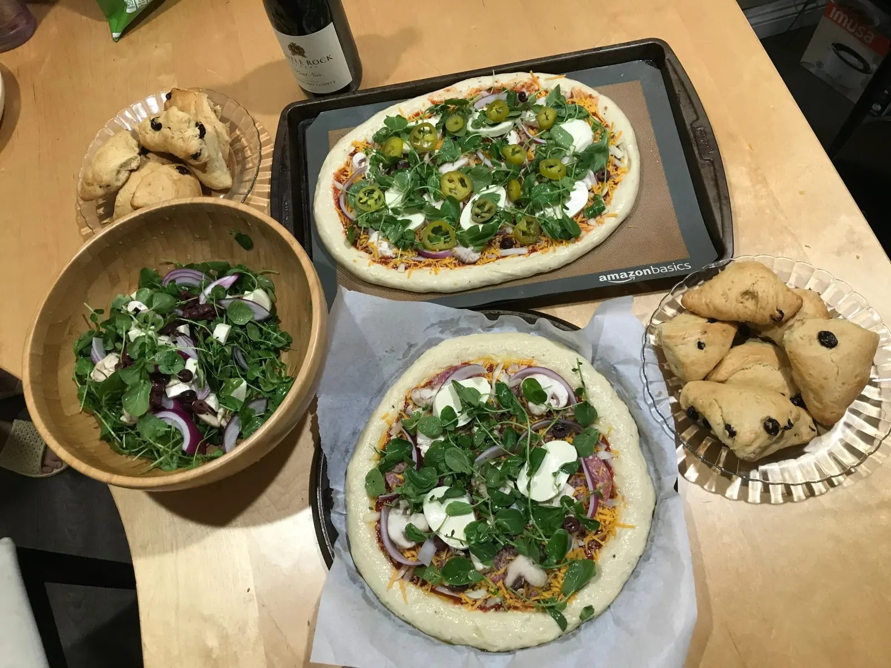
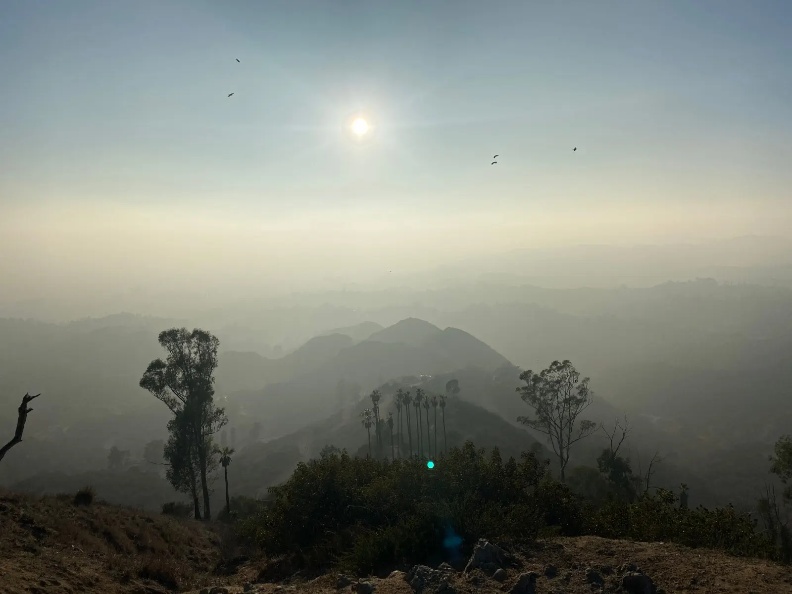

On December 17, after two weeks of basically nonstop intense studying, we finished our last Torts final and first semester of law school was officially a wrap. It’s funny how I’ve been waiting for this moment for at least the past two weeks, probably longer, but when it actually comes you realize you had felt like this moment would never come. And then all of a sudden the weight is lifted off of your shoulders and you keep asking yourself in disbelief, that’s it? We’re done??
It’s crazy how far we’ve come from September, when we were just itching for social interaction after 1.5 years of being stuck at home and only interacting with people via Zoom. The pre-orientation program I attended helped ease the academic and social transition into law school by relieving my social anxieties a little and allowing me to get used to the novelty of suddenly being in the company of 39 other people.
COVID-19 informed the way we did things. We wore masks all the time when indoors, did weekly COVID tests, and could only drink water in class starting a few weeks into the semester. But I’m grateful that the strict measures allowed us to have our classes in-person (I could not imagine Zoom school), even though technical difficulties with recording lectures on Zoom continued to give professors trouble throughout the semester.
LEARNING THE LAW
Law school is not “hard college” — it’s a new way of thinking. Since our common law system is case-made law, we learn the law through judge opinions. The law is ever-evolving as our social values and moral norms change, and even the current law is sometimes unclear – often we had to learn two or three approaches to interpreting a part of the law because different jurisdictions take different approaches. A slight tweak of the facts can lead to an entirely different outcome. As an economics major in undergrad, where there was often one right answer, the concept of not having a right answer was one of the most difficult things for me to get used to. I had to become comfortable with ambiguity and change my mindset to look at a situation from various perspectives. I did very poorly on our first Contracts practice question – thankfully it wasn’t graded, and my professor took the time to meet with me and get me on the right track to how I should be approaching it. I also had to fight the urge to fit the law into neat boxes, as the law can be complicated and nuanced and messy!
Unlike in college, you cannot just skim the readings (otherwise you wouldn’t understand anything). That said, the professors made clear the main points they want us to take away from each reading and case, which is key because the professors are the ones who write your exams! As the semester went on, however, doing the readings seemed to lose priority as professors stopped cold calling and started just telling us what we needed to know in order to get through all the material.
At the same time, law school is not totally different from what I’ve done before. The same study habits that got me through college are getting me through law school. The “outlines” that everyone says are crucial to studying for law school exams aren’t all that different from the compilation of key concepts I made to prepare for college exams. The routine became going to class, listening to every word the professor is saying like it’s gold, reviewing my notes after class, doing the next day’s readings, working on my outlines, and going to office hours.
One thing I didn’t anticipate was having a lot of “free” time. I was done with class by 3:30 each day, so basically had the rest of the day to do readings. We didn’t really have homework other than readings, so it was completely up to us how much time we wanted to spend preparing for class and for exams. Also, as 1Ls, we didn’t have our schedules filled with extracurriculars (orgs, journals, clinics, etc.) like the upperclassmen do – all we had to focus on was classes. The challenge with that was maintaining motivation and disciplining myself to do the readings and case briefs and outlines, and eventually practice exams. It was crucial to treat the semester as a marathon rather than a sprint, because burnout is real, especially in the grueling couple of weeks leading up to finals.
Study groups weren’t as big a thing as I had thought they would be. I thought everyone in law school formed a group of 4-5 people. I didn’t meet with classmates until Thanksgiving break, a couple weeks before finals, and even then it was just meeting to discuss our answers to a practice exam. But our lively discussions were helpful, and I enjoyed them – it felt like a uniquely law school thing.
Our professors were kind and understanding; nothing like in The Paper Chase. With 71 of us in a section, I was only cold called twice the entire semester. And while we all dread cold calling, the good thing is that you won’t forget it (I can still clearly remember the curveball question I got on Hawkins v. McGee, aka the Hairy Hand case). My professors were all quite different and unique. One was very organized and structured, while another was not as structured but has been described as a chaotic genius and is what you might think of when you think of the typical law school professor. My other professor has a sense of humor and talent for storytelling that I really appreciate.
I was pleasantly surprised to find my classes more interesting than I had expected: civil procedure (how a lawsuit works), contracts (what makes an agreement enforceable and the damages when one party breaches), torts (civil injuries), and legal research & writing (apparently the most important class for practicing law). They say that law school teaches you to think like a lawyer — I think it really does change your brain. Now everything is a contract and everything is a tort. When I hear the word “consideration,” the first thing that pops into my head is bargains. When someone kicks another person, I’m thinking “eggshell skull?!” (we read some pretty strange cases, e.g. Vosburg v. Putney and Garratt v. Dailey). Law school definitely changed our sense of humor – our vocabulary is now all law school puns and jokes, memes, and TikTok videos. We joked about whether we learned how to read cases, or whether we really just learned how to get by without doing the readings.
THE LAW STUDENT LIFE
While the focus was on classes, we were also busy attending organization events. Some orgs I got involved with were the Energy & Environmental Law Society, First Generation Professionals, and Public Interest Law Foundation. The 2Ls organized career panels, study breaks, and pro bono opportunities for us that were helpful in learning more about a practice area or meeting upperclassmen and getting advice from them.
I explored the Trader Joe’s frozen food section a lot more this semester but managed to cook most of the time. One-sheet pan meals became my friend. A perk of living close to home was that every month or so my parents would bring me dumplings or a meat dish that would last the entire week. I tried to stay in shape through Heather Robertson’s HIIT and Christa DiPaolo’s invigorating boxing workouts on YouTube, morning swims in the USC pool, weekly jogs around campus and the Rose Garden, and the 20-minute walks to class. I also did a couple free trial boxing classes with my “Battery Buddies” crew!

Funny thing is, I feel like as a grad student, I am just now having the typical college experience I didn’t get in college. In contrast to a wealthy suburb that was a “short” ride away from Boston, I am right in the heart of Los Angeles, near downtown. Instead of walking by forests and ponds on the way to class, I pass by red and gold adorned buildings, well-kept roses and tall palm trees, neatly trimmed trees, water fountains, and often workers setting up for yet another campus event, with the occasional instrumentalist(s) playing music outdoors.

Walking to class, it was common to see many students out and about, both undergrad and other grad students. On Saturday nights the campus and Village bustle with students wearing red and yellow face paint (football is HUGE here). Parties (mainly undergrad parties) are abundant. I too partied more than I did during college. I didn’t think I would enjoy “bar review,” a uniquely law school tradition where we go out to a bar every Thursday/Friday night, but it ended up being a lot of fun and the way I met many of my friends and classmates. Every week was at a different bar, and the bars ranged the spectrum in terms of poshness and vibe. The first bar review was at a super posh rooftop bar in West Hollywood, where the cheapest wine bottle was $400 – though the highlight for me that night was getting cheap seltzers at a convenience store across the street and chilling at another hotel bar (that had better views of the city, in my opinion). Other bars were more like a disco club where you can barely see or hear anything; my favorite was an 80s themed karaoke bar in Ktown (mainly because the music was more my type). While I think it would be easier to have conversations and meet people at less crazy settings like a nice restaurant or a casual mixer, it was fun to just relax and hang with friends, and make new ones.
While I didn’t have all that much time to explore LA (something I definitely plan to do more next semester), highlights of this semester (with new friends and old) include: lots of beach trips plus a Top of the World hike to see a night view of the city,



a Pacific Symphony Tchaikovsky concert (featuring one of my favorite pianists George Li!), a rooftop comedy show at Grand Central Market, making pizza from scratch with friends,

playing tennis, lunches with my small section in the Village, hiking and an unbelievable sunset view at Griffith Park (I don’t think I’ve ever seen the sun set at a snail’s pace before, which was amazing),

a spur-of-the-moment watching of Squid Game — and of course amazing food, including KazuNori (must-try sushi), a picnic in the Rose Garden, 626 Night Market,
dim sum in San Gabriel Valley, a friend’s birthday celebration at Salt & Straw (cool ice cream flavors), Little Tokyo, Sawtelle (highly recommend Tsujita LA Artisan Noodles and Matcha Village!), boba study breaks, and a delicious Shabbat dinner at my professor’s home (I thought Trader Joe’s challah bread was good…until I had the homemade version).
If I were to offer any advice to my August self, I would probably say:
- Start your outlines earlier! It was stressful not being done when I felt that I needed to be starting practice exams. Set aside a block of time each week to synthesize everything covered in class that week, and ask any questions about the material that you don’t understand (you might think there will be plenty of time at the end, but everyone’s time is limited by that point, including the professor’s, so you’ll be much better off making sure you understand the material before the end of the semester).
- Experiment with note-taking. I thought using OneNote and having two columns, one with my reading notes and one with my class notes, worked well, but I realized that you really don’t have to take down every single word the professor says. The professors tell you what’s most important to take away from the readings, and you should further synthesize the concepts in your own words. In some of my classes I was so focused on typing down everything that I didn’t have the brain width to actually listen to and comprehend what the professor was saying, which is the most important part. I might experiment more with handwritten notes next year.
- Take advantage of the extra time you have in the beginning of the semester, before things come down to the wire. Go out and explore! Hang out with friends! Try new things! Finding a sustainable balance between work and play ultimately became crucial in avoiding burnout and maintaining motivation to make it through the semester, particularly during finals period.
All in all, law school was tough but also really fun, and finishing finals was one of the most rewarding things I have done. It was really my classmates, the people, who made this semester so memorable. My classmates are quite diverse — there were people from all sorts of backgrounds, ages, cultures, and regions, from Hawaii and Canada to China and Armenia. Some just graduated from undergrad, while others had other master’s degrees. There were music, English, and STEM majors, as well as the more typical economics and political science majors. Some just got engaged or even recently had kids. While law school is made inherently competitive since we are all graded on a curve, I don’t think we had any real “gunners” in our section – everyone was smart and intense, but kind and willing to help each other out, and, importantly, we liked to have fun too. We were all in the same boat, going through this journey together.
With the fall semester behind me, I am looking forward to 3 weeks of reading books for fun, going hiking, celebrating the holidays, not worrying about deadlines, and doing zero case briefing, memo writing, or outlines. And then we get to do this all over again in the spring!